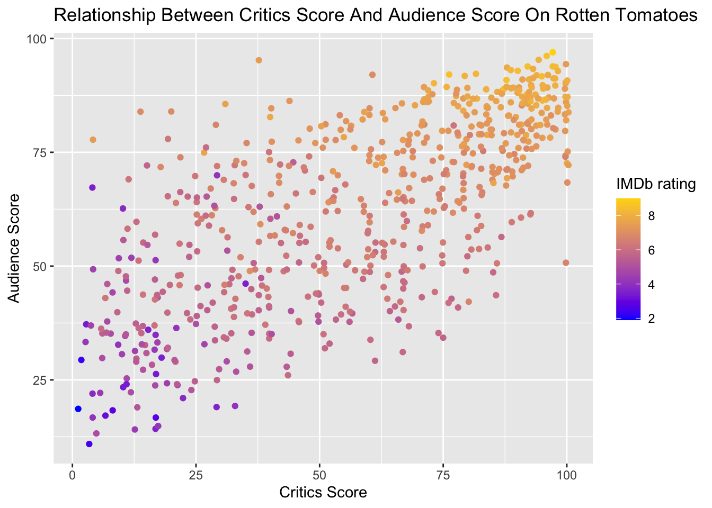
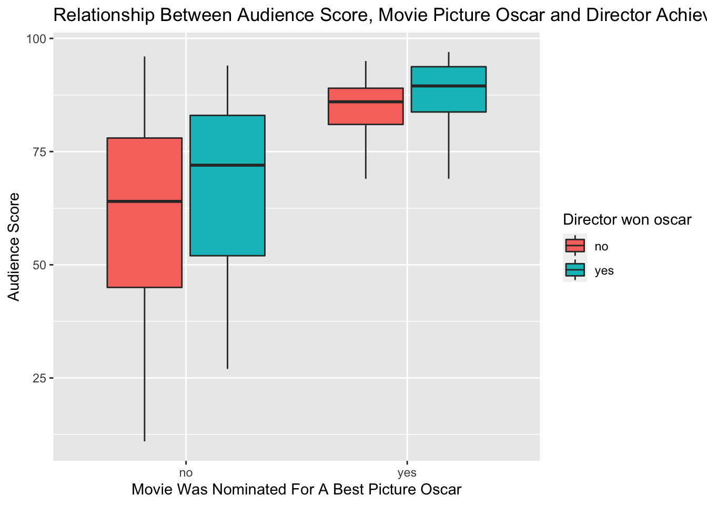
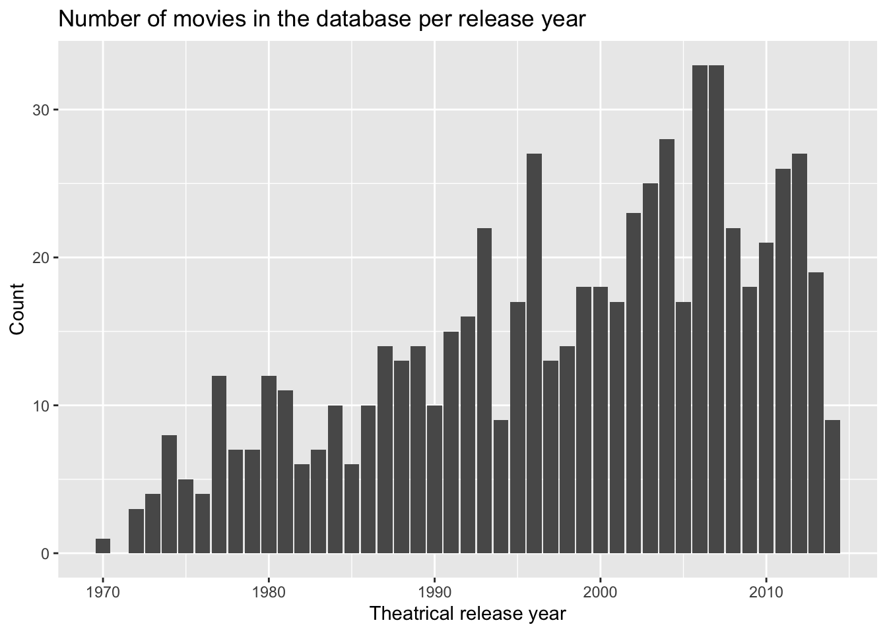

Open RStudio.
The RStudio interface consists of four main panes, or windows.
The location of these windows can be changed by clicking Tools > Global Options > Pane Layout.
You may have noticed that, by default, there is no text editor window open. In order to open one, click File > New File > R Script. Alternatively, click the ‘Add new document’ symbol and select R Script.
Open a new R script in R and save it as wpa_1_LastFirst.R (where Last and First is your last and first name).
Careful about capitalizing, and using _ and not, e.g., WPA-1-LastFirst.R
At the top of your script, write the following (with appropriate changes):
# Assignment: WPA 1
# Name: Laura Fontanesi
# Date: 15 March 2022RStudio supports automatic completion of code using the Tab key.
For example, let’s create a new object, named my_block_rewards:
my_block_rewards = c(34, 36, 90)Now, you can type my and then press Tab and RStudio will automatically complete the full name of the object if my is unique; otherwise, RStudio will list all of the objects (or functions) starting with my in your current environment.
Try now to define another object starting with my and see what happens.
my_score = .4Code completion also works for function arguments.
data() is a function to load one of R preset dataframes.
Type data(m in the console, then hit Tab to bring up a list of options. RStudio will automatically add a closing parenthesis for you, but your cursor needs to be between the two parentheses for tab completion to work.
Choose mtcars from the list and press Enter. What happens?
The mtcars object should have appeared in your environment tab.
The environment tab is in the top right window, which displays the R objects that exist in the global environment. These are the objects that were created by you in your current session.
If you click the load symbol next to the mtcars object, you can see the structure of the object. You can also click the view icon load to have a table view of the dataset. This might come useful at times.
What we want to do most of time is to run our code from the script and not from the console. This will help us writing more complicated functions and keep track of exactly what we have been doing up to that point.
You always have the choice to run part of it or the whole code. I suggest (particularly at the begginning) to always run from the start to the end of your code, and to make sure that your workspace is clean at the beginning.
It’s very useful to use shortcuts for this, for example:
| Description | Windows & Linux | Mac |
|---|---|---|
| Run current line/selection | Ctrl+Enter | Command+Enter |
| Run current line/selection (retain cursor position) | Alt+Enter | Option+Enter |
| Run current document | Ctrl+Alt+R | Command+Option+R |
| Run from document beginning to current line | Ctrl+Alt+B | Command+Option+B |
| Run from current line to document end | Ctrl+Alt+E | Command+Option+E |
See here for more.
Practice with the following chunk of code:
data(mtcars)
head(mtcars)## mpg cyl disp hp drat wt qsec vs am gear carb
## Mazda RX4 21.0 6 160 110 3.90 2.620 16.46 0 1 4 4
## Mazda RX4 Wag 21.0 6 160 110 3.90 2.875 17.02 0 1 4 4
## Datsun 710 22.8 4 108 93 3.85 2.320 18.61 1 1 4 1
## Hornet 4 Drive 21.4 6 258 110 3.08 3.215 19.44 1 0 3 1
## Hornet Sportabout 18.7 8 360 175 3.15 3.440 17.02 0 0 3 2
## Valiant 18.1 6 225 105 2.76 3.460 20.22 1 0 3 1colnames(mtcars)## [1] "mpg" "cyl" "disp" "hp" "drat" "wt" "qsec" "vs" "am" "gear" "carb"colnames(mtcars)[1] = 'MPG'
head(mtcars)## MPG cyl disp hp drat wt qsec vs am gear carb
## Mazda RX4 21.0 6 160 110 3.90 2.620 16.46 0 1 4 4
## Mazda RX4 Wag 21.0 6 160 110 3.90 2.875 17.02 0 1 4 4
## Datsun 710 22.8 4 108 93 3.85 2.320 18.61 1 1 4 1
## Hornet 4 Drive 21.4 6 258 110 3.08 3.215 19.44 1 0 3 1
## Hornet Sportabout 18.7 8 360 175 3.15 3.440 17.02 0 0 3 2
## Valiant 18.1 6 225 105 2.76 3.460 20.22 1 0 3 1It’s often the case that you want to re-execute commands that you previously entered. The RStudio console supports the ability to recall previous commands using the arrow keys:
You can even view a list of your recent commands by pressing Ctrl+Up on Windows or Command+Up on a Mac.
See here for more RStudio tips.
install.packages('tidyverse')library(tidyverse)# load data without downloading
con = url('https://github.com/laurafontanesi/r-seminar22/blob/main/data/movies.RData?raw=true')
load(con)
close(con)# command to list all the variables in your workspace
ls()## [1] "anova_fit" "con" "movies" "mtcars" "my_block_rewards" "my_score"
## [7] "regression_fit" "x"# inspect the first 5 lines of a dataset
movies %>%
slice(1:5)## # A tibble: 5 x 32
## title title_type genre runtime mpaa_rating studio thtr_rel_year thtr_rel_month thtr_rel_day dvd_rel_year dvd_rel_month
## <chr> <fct> <fct> <dbl> <fct> <fct> <dbl> <dbl> <dbl> <dbl> <dbl>
## 1 Filly… Feature F… Drama 80 R Indom… 2013 4 19 2013 7
## 2 The D… Feature F… Drama 101 PG-13 Warne… 2001 3 14 2001 8
## 3 Waiti… Feature F… Come… 84 R Sony … 1996 8 21 2001 8
## 4 The A… Feature F… Drama 139 PG Colum… 1993 10 1 2001 11
## 5 Malev… Feature F… Horr… 90 R Ancho… 2004 9 10 2005 4
## # … with 21 more variables: dvd_rel_day <dbl>, imdb_rating <dbl>, imdb_num_votes <int>, critics_rating <fct>,
## # critics_score <dbl>, audience_rating <fct>, audience_score <dbl>, best_pic_nom <fct>, best_pic_win <fct>,
## # best_actor_win <fct>, best_actress_win <fct>, best_dir_win <fct>, top200_box <fct>, director <chr>, actor1 <chr>,
## # actor2 <chr>, actor3 <chr>, actor4 <chr>, actor5 <chr>, imdb_url <chr>, rt_url <chr>summary(movies)## title title_type genre runtime mpaa_rating
## Length:651 Documentary : 55 Drama :305 Min. : 39.0 G : 19
## Class :character Feature Film:591 Comedy : 87 1st Qu.: 92.0 NC-17 : 2
## Mode :character TV Movie : 5 Action & Adventure: 65 Median :103.0 PG :118
## Mystery & Suspense: 59 Mean :105.8 PG-13 :133
## Documentary : 52 3rd Qu.:115.8 R :329
## Horror : 23 Max. :267.0 Unrated: 50
## (Other) : 60 NA's :1
## studio thtr_rel_year thtr_rel_month thtr_rel_day dvd_rel_year dvd_rel_month
## Paramount Pictures : 37 Min. :1970 Min. : 1.00 Min. : 1.00 Min. :1991 Min. : 1.000
## Warner Bros. Pictures : 30 1st Qu.:1990 1st Qu.: 4.00 1st Qu.: 7.00 1st Qu.:2001 1st Qu.: 3.000
## Sony Pictures Home Entertainment: 27 Median :2000 Median : 7.00 Median :15.00 Median :2004 Median : 6.000
## Universal Pictures : 23 Mean :1998 Mean : 6.74 Mean :14.42 Mean :2004 Mean : 6.333
## Warner Home Video : 19 3rd Qu.:2007 3rd Qu.:10.00 3rd Qu.:21.00 3rd Qu.:2008 3rd Qu.: 9.000
## (Other) :507 Max. :2014 Max. :12.00 Max. :31.00 Max. :2015 Max. :12.000
## NA's : 8 NA's :8 NA's :8
## dvd_rel_day imdb_rating imdb_num_votes critics_rating critics_score audience_rating
## Min. : 1.00 Min. :1.900 Min. : 180 Certified Fresh:135 Min. : 1.00 Spilled:275
## 1st Qu.: 7.00 1st Qu.:5.900 1st Qu.: 4546 Fresh :209 1st Qu.: 33.00 Upright:376
## Median :15.00 Median :6.600 Median : 15116 Rotten :307 Median : 61.00
## Mean :15.01 Mean :6.493 Mean : 57533 Mean : 57.69
## 3rd Qu.:23.00 3rd Qu.:7.300 3rd Qu.: 58300 3rd Qu.: 83.00
## Max. :31.00 Max. :9.000 Max. :893008 Max. :100.00
## NA's :8
## audience_score best_pic_nom best_pic_win best_actor_win best_actress_win best_dir_win top200_box director
## Min. :11.00 no :629 no :644 no :558 no :579 no :608 no :636 Length:651
## 1st Qu.:46.00 yes: 22 yes: 7 yes: 93 yes: 72 yes: 43 yes: 15 Class :character
## Median :65.00 Mode :character
## Mean :62.36
## 3rd Qu.:80.00
## Max. :97.00
##
## actor1 actor2 actor3 actor4 actor5 imdb_url
## Length:651 Length:651 Length:651 Length:651 Length:651 Length:651
## Class :character Class :character Class :character Class :character Class :character Class :character
## Mode :character Mode :character Mode :character Mode :character Mode :character Mode :character
##
##
##
##
## rt_url
## Length:651
## Class :character
## Mode :character
##
##
##
## # plot relationship between two variables, critics_score and audience_score
ggplot(data = movies, aes(x = critics_score, y = audience_score, color=imdb_rating)) +
geom_jitter() +
scale_colour_gradient(low = "blue", high = "gold", limits=range(movies[,'imdb_rating'])) +
labs(x = "Critics Score", y = "Audience Score", color='IMDb rating') +
ggtitle("Relationship Between Critics Score And Audience Score On Rotten Tomatoes")
# Run a correlation test
cor.test(~ audience_score + critics_score, data = movies)##
## Pearson's product-moment correlation
##
## data: audience_score and critics_score
## t = 25.273, df = 649, p-value < 2.2e-16
## alternative hypothesis: true correlation is not equal to 0
## 95 percent confidence interval:
## 0.6633319 0.7410163
## sample estimates:
## cor
## 0.7042762# Run a regression
regression_fit = lm(formula = audience_score ~ critics_score + imdb_rating,
data = movies)
# Print summary results
summary(regression_fit)##
## Call:
## lm(formula = audience_score ~ critics_score + imdb_rating, data = movies)
##
## Residuals:
## Min 1Q Median 3Q Max
## -26.668 -6.758 0.723 5.513 52.438
##
## Coefficients:
## Estimate Std. Error t value Pr(>|t|)
## (Intercept) -37.03195 2.86401 -12.930 < 2e-16 ***
## critics_score 0.07318 0.02161 3.386 0.000753 ***
## imdb_rating 14.65760 0.56590 25.901 < 2e-16 ***
## ---
## Signif. codes: 0 '***' 0.001 '**' 0.01 '*' 0.05 '.' 0.1 ' ' 1
##
## Residual standard error: 10.08 on 648 degrees of freedom
## Multiple R-squared: 0.7524, Adjusted R-squared: 0.7516
## F-statistic: 984.4 on 2 and 648 DF, p-value: < 2.2e-16cormat = cor(movies[, c('audience_score', 'critics_score', 'imdb_rating', 'imdb_num_votes')])
cormat## audience_score critics_score imdb_rating imdb_num_votes
## audience_score 1.0000000 0.7042762 0.8648652 0.2898128
## critics_score 0.7042762 1.0000000 0.7650355 0.2092508
## imdb_rating 0.8648652 0.7650355 1.0000000 0.3311525
## imdb_num_votes 0.2898128 0.2092508 0.3311525 1.0000000ggplot(data = movies, aes(x = best_pic_nom, y = audience_score, fill = best_dir_win)) +
geom_boxplot() +
labs(x = "Movie Was Nominated For A Best Picture Oscar", y = "Audience Score", fill = "Director won oscar") +
ggtitle("Relationship Between Audience Score, Movie Picture Oscar and Director Achievement")
# Run an ANOVA
anova_fit = aov(formula = audience_score ~ best_pic_nom * best_dir_win,
data = movies)
# Print summary results
summary(anova_fit)## Df Sum Sq Mean Sq F value Pr(>F)
## best_pic_nom 1 11999 11999 30.712 4.36e-08 ***
## best_dir_win 1 1014 1014 2.597 0.108
## best_pic_nom:best_dir_win 1 38 38 0.097 0.756
## Residuals 647 252769 391
## ---
## Signif. codes: 0 '***' 0.001 '**' 0.01 '*' 0.05 '.' 0.1 ' ' 1ggplot(data = movies, aes(x = thtr_rel_year)) +
geom_bar() +
ggtitle("Number of movies in the database per release year") +
labs(x = "Theatrical release year", y = "Count")
Task A
imdb_rating, imdb_num_votes and audience_score.Task B
best_actor_win, best_actress_win and audience_score.Task C
mpaa_rating category.Save and email your wpa_1_LastFirst.R script to me at laura.fontanesi@unibas.ch by the end of the day.